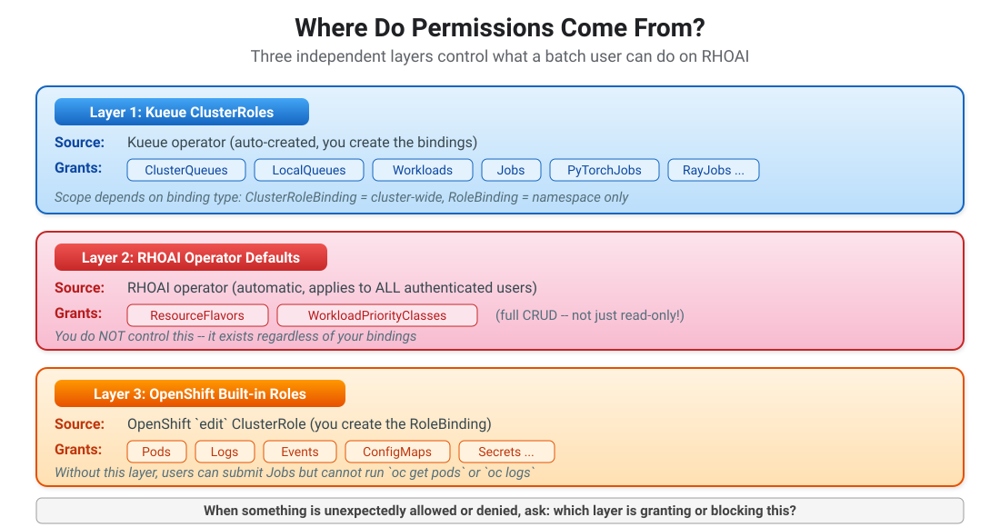
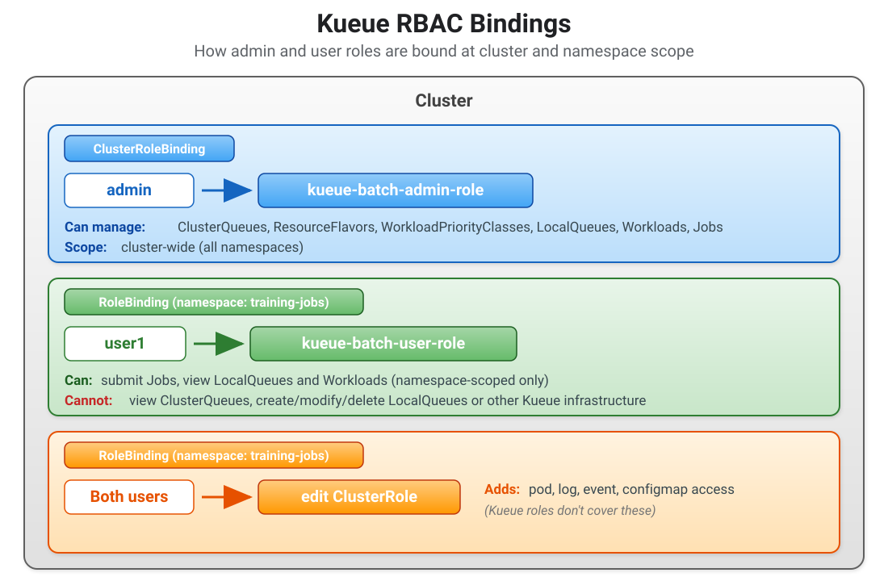

Kueue RBAC
In a real GPU cluster, not every user should be able to create ClusterQueues or modify resource quotas. Kueue separates administrative tasks (setting up queues, flavors, and quotas) from day-to-day user tasks (submitting jobs, checking workload status) using Kubernetes role-based access control (RBAC).
How RBAC Works in Kueue
The Kueue operator automatically deploys two aggregated ClusterRoles when it starts. You don’t create these roles — they already exist. You only create bindings to assign them to users.
kueue-batch-admin-role
This role is for platform administrators who manage the Kueue infrastructure. It aggregates permissions from multiple sub-roles (ClusterQueue editor, LocalQueue editor, ResourceFlavor editor, Workload editor, Job editor) into a single role with full CRUD access to all Kueue resources.
kueue-batch-user-role
This role is for data scientists and developers who submit and monitor batch workloads. It aggregates permissions that allow full Job management but only read-only access to namespace-scoped Kueue resources. Users can see LocalQueues and Workloads in their namespace and check the status of their workloads, but they cannot modify the queue configuration.
Permission Matrix
The table below shows what each ClusterRole grants. Effective permissions also depend on the binding type — see the important note after the table.
| Resource | kueue-batch-admin-role |
kueue-batch-user-role |
|---|---|---|
|
create, delete, get, list, patch, update, watch |
get, list, watch (in the role, but see note below) |
|
create, delete, get, list, patch, update, watch |
— (not in the role) |
|
create, delete, get, list, patch, update, watch |
— (not in the role) |
|
create, delete, get, list, patch, update, watch |
get, list, watch (view only) |
|
create, delete, get, list, patch, update, watch |
get, list, watch (view only) |
|
create, delete, get, list, patch, update, watch |
create, delete, get, list, patch, update, watch |
|
Binding type affects cluster-scoped resources.
The On RHOAI clusters, |
Where Do Permissions Come From?
On RHOAI, a user’s effective permissions come from three independent layers — not just the Kueue roles. Understanding which layer is responsible for which permission is key to troubleshooting RBAC issues.

Binding Types
The two roles use different binding types, which is an intentional design choice:
-
kueue-batch-admin-roleis bound with a ClusterRoleBinding — the admin needs cluster-wide access because ClusterQueues, ResourceFlavors, and WorkloadPriorityClasses are cluster-scoped resources. -
kueue-batch-user-roleis bound with a RoleBinding scoped to a specific namespace — users should only see queues and workloads in the namespaces they work in, not across the entire cluster.

Never bind kueue-batch-user-role to the system:authenticated group — this would give every authenticated user the ability to create Jobs in any namespace where they have a RoleBinding.
Always bind to specific users or groups, scoped to specific namespaces, following the principle of least privilege.
|
Prerequisites
This exercise requires:
-
The Kueue operator is running (Install the Red Hat Build of Kueue^)
-
The
training-jobsnamespace andtraining-queueLocalQueue exist (Configure Kueue Resources^) -
Two OpenShift users:
adminanduser1(Automatically created for RHDP users)
Replace admin and user1 in the YAML files with the actual usernames on your cluster before applying.
|